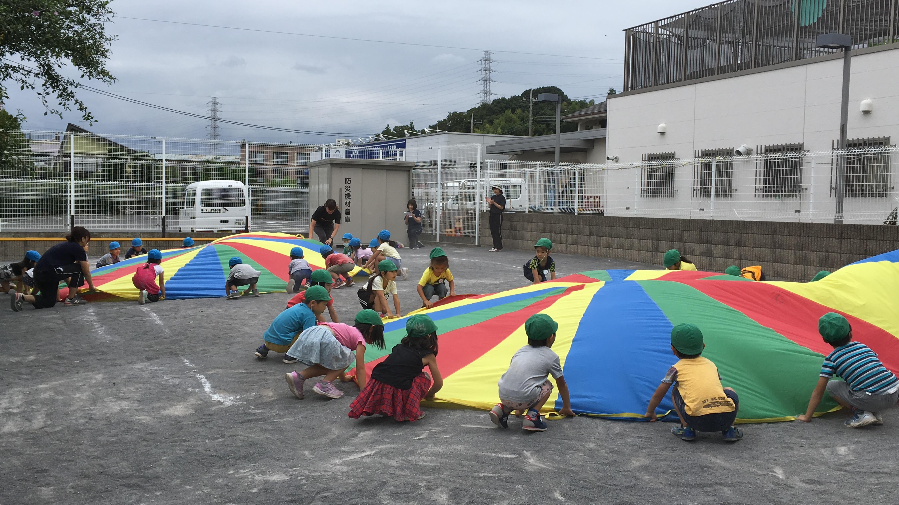
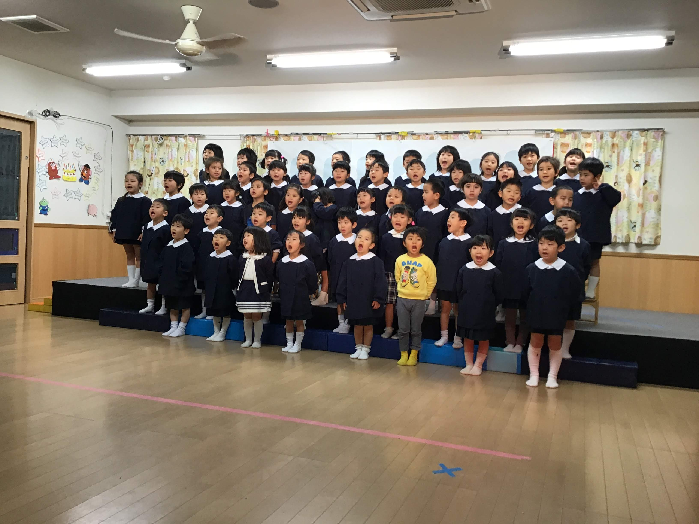

社会福祉法人 光彩会
光の森保育園
〒194-0022 東京都町田市森野5-21-5
Tel 042-720-8423 Fax 042-720-8424


社会福祉法人 光彩会
光の森保育園
〒194-0022 東京都町田市森野5-21-5
Tel 042-720-8423 Fax 042-720-8424
|  | ＜運動会＞ 年中さんと年長さんが合同で行う毎年恒例の出し物 『パラバルーン』は見ものです！！ |
|
|  | ＜発表会＞ 日頃の頑張りを保護者の皆様にみていただける発表会。頑張った姿は感動ものです！！ |
|
 |
＜おみせやさん＞ 幼児さんがとうもろこし屋さんやアイスクリーム屋さんなどのおみせやさんになりきって、乳児さんから幼児さんまでみんなでお買いものを楽しみます！ |
| 令和2年度 年間行事予定表 光の森保育園 | |||||||||
|---|---|---|---|---|---|---|---|---|---|
| 月 | 日 | 曜日 | 園行事 | 一般行事 | 月 | 日 | 曜日 | 園行事 | 一般行事 |
| 4月 | 1 | 水 | ☆入園式・進級式☆ | 11月 | 2 | 月 | 秋の遠足（まつ） | ||
| 23 | 木 | 中止☆4月誕生会☆ | 3 | 火 | 文化の日 | ||||
| 29 | 水 | 昭和の日 | 9 | 月 | ☆保育参観☆ | ||||
| 5月 | 3 | 日 | 憲法記念日 | 10 | 火 | ☆保育参観☆ | |||
| 4 | 月 | みどりの日 | 11 | 水 | ☆保育参観☆ | ||||
| 5 | 火 | こどもの日 | 12 | 木 | ☆11月誕生会☆七五三集会 | ||||
| 6 | 水 | 振替休日 | 23 | 月 | 勤労感謝の日 | ||||
| 16 | 土 | ☆親子遠足☆ | 12月 | 19 | 土 | ☆生活発表会☆ | |||
| 21 | 木 | ☆5月誕生会☆ | 23 | 水 | ☆12月誕生会☆クリスマス会 | ||||
| 29 | 金 | 虫歯予防集会 | 28 | 月 | 終業式 | ||||
| 6月 | 11 | 木 | じゃがいも堀(幼児) | 29 | 火 | 年末年始休暇 | |||
| 25 | 木 | ☆6月誕生会☆ | 30 | 水 | |||||
| 7月 | 7 | 火 | 七夕集会 | 31 | 木 | ||||
| 16 | 木 | ☆7月誕生会☆ | 1月 | 1 | 金 | 元日 | |||
| 17 | 金 | お泊り会(年長) | 2 | 土 | |||||
| 18 | 土 | お泊り会(年長) | 3 | 日 | |||||
| 23 | 木 | 海の日 | 4 | 月 | 始業式 | ||||
| 24 | 金 | スポーツの日 | 11 | 月 | 成人の日 | ||||
| 8月 | 10 | 月 | 山の日 | 21 | 木 | ☆1月誕生会☆ | |||
| 27 | 木 | ☆8月誕生会☆ | 2月 | 3 | 水 | 節分集会 | |||
| 9月 | 21 | 月 | 敬老の日 | 10 | 水 | おみせやさん | |||
| 22 | 火 | 秋分の日 | 11 | 木 | 建国記念日 | ||||
| 24 | 木 | ☆9月誕生会☆ | 18 | 木 | ☆2月誕生会☆ | ||||
| 10月 | 20 | 火 | サツマイモ堀 | 3月 | 3 | 水 | ☆3月誕生会☆ひな祭り集会 | ||
| 24 | 土 | ☆運動会☆ | 4 | 木 | お別れ遠足 | ||||
| 26 | 月 | 秋の遠足(うめ） | 20 | 土 | 春分の日 | ||||
| 29 | 木 | ☆10月誕生会☆ | 25 | 木 | お別れ会 | ||||
| 30 | 金 | 秋の遠足(たけ） | 27 | 土 | 卒園式 | ||||
| ＊全園児検診 4月・10月 | |||||||||
| ＊避難訓練 毎月1回 | |||||||||
| ＊個人面談 7月・2月 | |||||||||
| ☆・・・保護者参加型行事です。 | |||||||||